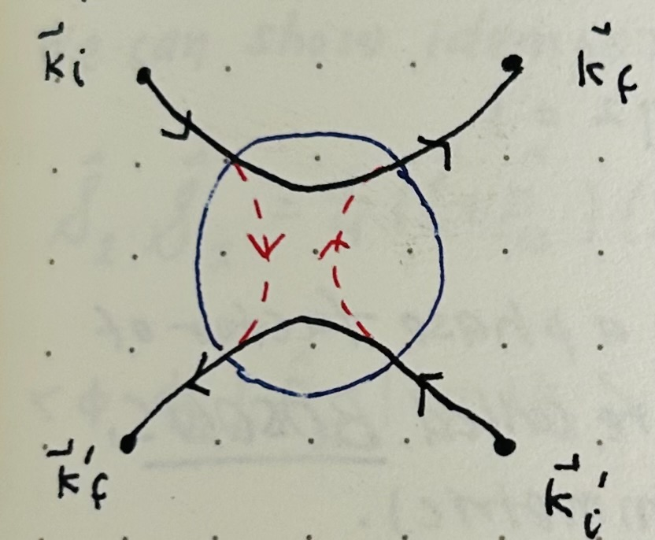

Identical Particles
In classical mechanics you can differentiate two particles even if they are completely identical, by their trajectories. They are always identifieable this way. But how do we keep particles/systems separate in quantum mechanics?
Say we have two trajectories: one from \(\vec k_i\) to \(\vec k_f\) and the other from \(\vec k_i'\) to \(\vec k_f,\). In quantum mechanics only, these two trajectories interact, say within the range highlighted in blue in the figure. At this point, some mixing happens, and aprticle that started with \(\vec k_i'\) could end up with \(\vec k_f\). This particle is no indistinguishable from a particle that started from \(\vec k_i\) and ended with \(\vec k_f\).
We see this in the formalism we've been using for photons. We describe the state of a field in terms of the number of photons and their mode, but photons are just a quanta of excitation, If we go from \(|n_{\vec k, i}\rangle\) to \(|(n-1)_{\vec k, i}\rangle\), we don't know "which" photon has been lost; there isn't even a notion of labels for photons of the same mode. This is also true for massive particles.
Say we have particles \(A, B, C\) with Hilbert/configuration spaces \(\mathcal E_a, \mathcal E_b, \mathcal E_c\). If these three particles WERE distinguishable in a way not related to their dynamics (so we assume \(\mathcal E_a=\mathcal E_b=\mathcal E_c\)) then: \[ \mathcal E_{A + B + C} = \mathcal E_a + \mathcal E_b + \mathcal E_c, \quad \{|\phi_i\rangle\otimes|\phi_j\rangle\otimes|\phi_k\rangle\}_{i,j,k\in \mathbb N} \] and the state \(|\phi_i\rangle\otimes|\phi_j\rangle\otimes|\phi_k\rangle\), which corresponds to \(|\phi_i\rangle\) for particle A, \(|\phi_j\rangle\) for particle B, etc. is totally different from \(|\phi_j\rangle\otimes|\phi_i\rangle\otimes|\phi_k\rangle\) where particle A is in state \(|\phi_j\rangle\) and particle B is in state \(|\phi_i\rangle\). If these three particles were indistinguishable, however, we would want these two states to be indistinguishable also. But in the tensor product, order matters!
So we see the tensor product fails to reproduce actual behavior of identical particles, BUT the tensor product is needed to satisfy the requirement that quantum mechanics is rigorously linear. We thus use not a single element, but a subspace of the tensor product space to represent a state.
Pairwise permutations, or exchanges. Say that \(|\psi\rangle\in\mathcal E_1\otimes\mathcal E_2\). In order to properly represent identical particles, we want \(\psi(x_1, x_2) = \psi(x_2, x_1)\), or: \[ (\langle x_1|\otimes\langle x_2|)|\psi\rangle = (\langle x_2|\otimes\langle x_1|)|\psi\rangle \] In other words, it doesn't matter if particle 1 is at position \(x_1\) or if particle 2 is at position \(x_2\); if the reverse was true, it should still be the same state. All that matters is that there is one particle at each location. Define the permutation of arguments 1 and 2 as operator \(\hat P_{12}\) so that: \[ \hat P_{12}\psi(x_1, x_2) = \psi(x_2, x_1) \] If \(\psi(x_1, x_2) = \pi\psi(x_2, x_1)\) for a phase factor \(\pi\), then they are the same state. We want this to be the case, so that even if we exchange the order of particles or their states, the total state is the same overall. Furthermore, \[ \psi(x_1, x_2) = \hat P_{12}\hat P_{12}\psi(x_2, x_1) = \pi^2\psi(x_1, x_2) \implies \pi^2 = 1 \] so phase factor \(\pi\) can only be \(\pm 1\). This means that the states that can represent identical particles are states that are exactly the same upon permutation (so the phase factor is 1), or states that are exactly the opposite upon permutation (so the phase factor is -1). Even if they are opposite, they still only differ from the original state by a phase factor, so they are, in fact, the same state.
We can also see that a single exchange can be composed of several other exchanges: \begin{align} \hat P_{12}( \psi(x_1,\cdots, x_i, \cdots, x_j,\cdots,x_N)) &=\psi(x_1,\cdots, x_j, \cdots, x_i,\cdots,x_N) \\ &=\pi_{ij}\psi(x_1,\cdots, x_i, \cdots, x_j,\cdots,x_N) \\ \hat P_{12}(i,j,k) &= (j,i,k) = \pi_{12}(i,j,k) \\ &= \hat P_{23}\hat P_{13}\hat P_{23}(ijk) \\ &= \pi_{23}\hat P_{23}\hat P_{13}(ikj) \\ &= \pi_{23}\pi_{13}\hat P_{23}(jki) \\ &= \pi_{23}\pi_{13}\pi_{23}(jik) \end{align} We want the action of \(\hat P_{12}\) to be identical to the action of \(\hat P_{23}\hat P_{13}\hat P_{23}\); we don't want the composition of exchanges to matter in the final state. So the resulting phase factors must also be the same: \[\pi_{12} = \pi_{23}\pi_{13}\pi_{23} = \pi_{23}^2\pi_{13}\] because the square of \(\pm 1\) is always 1, this tells us that \[\pi_{12} = \pi_{13}\] We can, in fact, repeat this argument and show that ALL exchanges are equal to each other, or that for a single non-zero state, all exchanges have the same sign. This means that a state cannot be symmetric under one exchange and anti-symmetric under another.
It turns out that there are particles that always have a state which gains a phase factor of 1 on exchange (so their states are always symmetric), called bosons. Particles with states that always gain a factor of -1 on exchange (anti-symmetric) are called fermions.
The symmetric and anti-symmetric tensor product subspaces. Within the total Hilbert space, we can find states that are already symmetric and anti-symmetric. For example: \[|\psi\rangle\otimes|\phi\rangle + |\phi\rangle\otimes|\psi\rangle\] is in the Hilbert space and applying \(\hat P_{12}\) yields the same state. These are symmetric combinations of basis vectors in the total Hilbert space. States like: \[|\psi\rangle\otimes|\phi\rangle - |\phi\rangle\otimes|\psi\rangle\] are anti-symmetric; applying \(\hat P_{12}\) yields \[|\phi\rangle\otimes|\psi\rangle - |\psi\rangle\otimes|\phi\rangle = -(|\psi\rangle\otimes|\phi\rangle - |\phi\rangle\otimes|\psi\rangle)\] Within our total (two-particle) space, we can define projectors: \begin{align} \hat{\mathscr S}_2 &= \frac{1}{2}(\hat 1 + \hat P_{12}) \\ \hat{\mathscr A}_2 &= \frac{1}{2}(\hat 1 - \hat P_{12}) \end{align} which we call the symmetrizer and anti-symmetrizer. We can show their self-adjointness and idempotence, for example, for the symmetrizer: \begin{align} \hat{\mathscr S}_2\hat{\mathscr S}_2 &= \frac{1}{4}(\hat 1 + \hat P_{12})(\hat 1 + \hat P_{12}) \\ &= \frac{1}{4}(\hat 1 + \hat P_{12} + \hat P_{12} + \hat P_{12}\hat P_{12}) \\ &= \frac{1}{4}(\hat 1 + 2\hat P_{12} + \hat 1) \\ &= \frac{1}{2}(\hat 1 + \hat P_{12}) \\ &= \hat{\mathscr S}_2 \end{align} where we know that swapping two items and them sawpping again brings them into their original order, or that \(\hat P_{12}\hat P_{12} = \hat 1\). So the symmetrizer is idempotent, and: \begin{align} \langle\phi_1 \phi_2 | \hat P_{12} | \psi_1 \psi_2\rangle &= \langle \phi_1 \phi_2 |\psi_2 \psi_1\rangle \\ &= \langle\phi_1 | \psi_2\rangle\langle\phi_2|\psi_1\rangle \\ &= \langle\phi_2|\psi_1\rangle\langle\phi_1 | \psi_2\rangle \\ &= (\langle\psi_1|\phi_2\rangle\langle\psi_2|\phi_1\rangle)* \\ &= (\langle\psi_1\psi_2|\phi_2\phi_1\rangle)^* \\ &= (\langle\psi_1\psi_2|\hat P_{12} |\phi_1\phi_2\rangle)^* \\ &= \langle\psi_1\psi_2|\hat P^\dagger_{12} |\phi_1\phi_2\rangle \\ \hat P_{12} &= \hat P_{12}^\dagger \end{align} since \(\hat P_{12}\) is self adjoint, \(\hat{\mathscr S}_2 = \frac{1}{2}(\hat 1 + \hat P_{12})\) is also self-adjoint.
These two projector project an arbitrary state into the symmetric and anti-symmetric subspaces of the full Hilbert space. For example: \[ \hat{\mathscr S}_2 (|\psi\rangle\otimes|\phi\rangle)= \frac{1}{2}(\hat 1 + \hat P_{12})(|\psi\rangle\otimes|\phi\rangle) = \frac{1}{2}(|\psi\rangle\otimes|\phi\rangle + |\phi\rangle\otimes|\psi\rangle) \] and \[ \hat{\mathscr A}_2(|\psi\rangle\otimes|\phi\rangle) = \frac{1}{2}(\hat 1 - \hat P_{12})(|\psi\rangle\otimes|\phi\rangle) = \frac{1}{2}(|\psi\rangle\otimes|\phi\rangle - |\phi\rangle\otimes|\psi\rangle) \] Note also that \(|\psi\rangle\otimes|\phi\rangle = (\hat{\mathscr S}_2 + \hat{\mathscr A}_2)(|\psi\rangle\otimes|\phi\rangle)\). Notation-wise, we sometimes write the following: \[ |\psi\rangle\odot|\phi\rangle \equiv \hat{\mathscr S}_2|\psi\rangle\otimes|\phi\rangle \] \[ |\psi\rangle\wedge|\phi\rangle \equiv \hat{\mathscr A}_2|\psi\rangle\otimes|\phi\rangle \] More on permutations. Call \(S_N\) the group of permutations of \(N\) objects, which thus has \(N!\) elements. \[ S_N = \{\hat{\mathscr p}: I_N \to I_N, \text{bijective}\} \] Permutations are bijective/invertible and map one arrangement of \(N\) objects to another arrangement of the same \(N\) objects. For example, \(\hat{\mathscr p}: I_3\to I_3\) could look like:
We can, of course, write the symmetrizer and anti-symmetrizer for \(N\) items, not just 2: \[ \hat{\mathscr S}_N = \frac{1}{N!}\sum_{\hat{\mathscr p}\in S_N} \hat{\mathscr p} \quad\text{ and }\quad \hat{\mathscr A}_N = \frac{1}{N!}\sum_{\hat{\mathscr p}\in S_N} (-1)^p \hat{\mathscr p} \] where the set of all permutations of course includes the identity, and parity \(p\) of a permutation is defined as follows:
An arbitrary permutation can be written as many binary exchanges of two elements at a time. For example, this single permutation, call it \(\hat{\mathscr p}\):
can really be composed of the binary exchanges \(\hat P_{13}\hat P_{23}\hat P_{34}\): This is not a unique composition, either, there are many possible sequences of exchanges that equal \(\hat{\mathscr p}\). HOWEVER. This permutation can only be composed of an ODD number of exchanges! Permutations like this have ODD PARITY, while permutations that can only be composed of an even number of binary exchanges have EVEN PARITY.
We thus define parity \(p\) as: \[p:\begin{cases} 0 & even \\ 1 & odd \end{cases}\] so that in our definiton of the anti-symmetrizer, \[(-1)^p=\begin{cases} +1 & even \\ -1 & odd \end{cases}\] Note that these permutations are unitary, meaning that \(\hat{\mathscr p}^\dagger = \hat{\mathscr p}^{-1}\).
If we have \(N\) fermions, \(\mathcal E_f = \hat{\mathscr A}_N\bigotimes_{i=1}^N\mathcal E_i = \bigwedge_{i=1}^N\mathcal E_i\), and if we have \(N\) bosons, \(\mathcal E_f = \hat{\mathscr S}_N\bigotimes_{i=1}^N\mathcal E_i = \bigodot_{i=1}^N\mathcal E_i\) where \[\text{dim}(\bigwedge_{i=1}^N\mathcal E_i) = \binom{D}{N} = \frac{D!}{N!(D-N)!}\le\text{dim}(\bigotimes_{i=1}^N\mathcal E_i) = D^N\] and \[ \text{dim}(\bigwedge_{i=1}^N\mathcal E_i) = \binom{N+D-1}{N} = \frac{(N+D-1)!}{N!(D-1)!} \le D^N \] for \(\text{dim}(\mathcal E_i) = D\).
Note that \(|\phi\rangle\otimes|\phi\rangle\) CANNOT be anti-symmetrized; applying the anti-symmetrizer results in the 0 vector. This is what's known as the Pauli Exclusion Principle, that two Fermions cannot ever be in the same state.
An Example with the Helium Atom
Say that the two electrons in the helium atom are in the \(1s\) and \(2s\) states. Using \(e = 1, \hbar = 1, m_e = 1\): \[ \hat H = \frac{\hat p_1^2}{2m} + \frac{\hat p_2^2}{2m} - \frac{2}{r_1} - \frac{2}{r_2} + \frac{1}{r_{12}} \] and kinetic energy component \(\hat O = \frac{\hat p_1^2}{2m} + \frac{\hat p_2^2}{2m} - \frac{2}{r_1} - \frac{2}{r_2}\), while bielectric component \(\hat G = \frac{1}{r_{12}}\). Notice that the Hamiltonian is the same even if we swap 1 and 2-- it is symmetric. This means that it preserves symmetry and that \([\hat H, \hat{\mathscr p}] = 0\) for any permutation \(\hat{\mathscr p}\).For two electrons, we have four different possible spin configurations, \(\uparrow\uparrow, \downarrow\downarrow, \uparrow\downarrow, \downarrow\uparrow \), which can appear in the spin-singlet state: \[ \overset {1}\, \Theta_{\mu_s=0} = \frac{1}{\sqrt{2}}(\alpha\beta - \beta\alpha) \] which is anti-symmetric, or in any of the three spin-triplet states, which are symmetric: \[ \overset {3}\, \Theta_{\mu} = \begin{cases} \alpha\alpha \\ \frac{1}{\sqrt 2}(\alpha\beta + \beta\alpha) \\ \beta\beta \end{cases} \] Electrons are fermions, hence they must be in an anti-symmetric state. This means that if the spin state is symmetric, the spatial function must be anti-symmetric, and if the spin state is anti-symmetric, then the spatial function must be symmetric! For example, we can use the symmetric spatial function \(\sqrt 2 \hat{\mathscr S}_2(\phi_{1s}\phi_{2s})\) with the spin-singlet state: \begin{align} \overset {1}\, \psi_{1s, 2s}(x_1, x_2) &= \frac{1}{\sqrt 2}(\alpha\beta - \beta\alpha)\sqrt 2 \hat{\mathscr S}_2(\phi_{1s}\phi_{2s}) \\ &= \frac{1}{\sqrt 2}(\alpha\beta - \beta\alpha)\sqrt 2 \frac{1}{2}(\hat 1 + \hat P_{12})(\phi_{1s}\phi_{2s}) \\ &= \frac{1}{\sqrt 2}(\alpha\beta - \beta\alpha)\sqrt 2 \frac{1}{2}(\phi_{1s}\phi_{2s} + \phi_{2s}\phi_{1s}) \\ &= \frac{1}{\sqrt 2}(\alpha\beta - \beta\alpha) \frac{1}{\sqrt 2}(\phi_{1s}\phi_{2s} + \phi_{2s}\phi_{1s}) \\ \end{align} and we can show that this is indeed an overall anti-symmetrized state: \begin{align} \overset {1}\, \psi_{1s, 2s}(x_1, x_2) &= \frac{1}{\sqrt 2}(\alpha\beta - \beta\alpha) \frac{1}{\sqrt 2}(\phi_{1s}\phi_{2s} + \phi_{2s}\phi_{1s}) \\ &= \frac{1}{\sqrt 2}(\frac{1}{\sqrt 2}(\alpha\beta - \beta\alpha)\phi_{1s}\phi_{2s} + \frac{1}{\sqrt 2}(\alpha\beta - \beta\alpha)\phi_{2s}\phi_{1s}) \\ &= \frac{1}{\sqrt 2}(\frac{1}{\sqrt 2}(\alpha\beta - \beta\alpha)\phi_{1s}\phi_{2s} - \frac{1}{\sqrt 2}(\beta\alpha-\alpha\beta)\phi_{2s}\phi_{1s}) \\ &= \frac{1}{\sqrt 2}\frac{1}{2}(\frac{2}{\sqrt 2}(\alpha\beta - \beta\alpha)\phi_{1s}\phi_{2s} - \frac{2}{\sqrt 2}(\beta\alpha-\alpha\beta)\phi_{2s}\phi_{1s}) \\ &= \frac{1}{\sqrt 2}\frac{1}{2}(\sqrt 2(\alpha\beta - \beta\alpha)\phi_{1s}\phi_{2s} - \sqrt 2(\beta\alpha-\alpha\beta)\phi_{2s}\phi_{1s}) \\ &= \sqrt 2\frac{1}{2}(\frac{1}{\sqrt 2}(\alpha\beta - \beta\alpha)\phi_{1s}\phi_{2s} - \frac{1}{\sqrt 2}(\beta\alpha-\alpha\beta)\phi_{2s}\phi_{1s}) \\ &= \sqrt 2\hat{\mathscr A}_2(\frac{1}{\sqrt 2}(\alpha\beta - \beta\alpha)\phi_{1s}\phi_{2s}) \\ &= \sqrt 2\hat{\mathscr A}_2(\overset {1}\, \Theta\phi_{1s}\phi_{2s}) \\ \end{align} similarly, if we use one of the spin triplet states, we must use an anti-symmetric spatial function \(\sqrt 2 \hat{\mathscr A}_2(\phi_{1s}\phi_{2s})\): \[ \overset {3}\, \psi_{1s, 2s}(x_1, x_2) = \sqrt 2 \hat{\mathscr A}_2(\overset {3}\, \Theta_{\mu}\phi_{1s}\phi_{2s}) = \sqrt 2 \overset {3}\, \Theta_{\mu} \hat{\mathscr A}_2(\phi_{1s}\phi_{2s}) \] So even though the Hamiltonian has no dependence on the intrinsic spin, the spin dictates whether the spatial function is anti-symmetric or symmetric. This has an effect on the energy of the system, and thus which spatial functions the system prefers. Let's define \(\hat{\mathscr h}_i = \frac{\hat p^2_i}{2m} - \frac{2}{r_i}\) and start by inspecting the kinetic terms in the Hamiltonian: \begin{align} \langle \overset {1}\, \psi_{1s, 2s} | \hat O | \overset {1}\, \psi_{1s, 2s}\rangle &= \sum_{i=1}^2\sqrt 2\sqrt 2 \langle \overset {1}\, \Theta (\hat{\mathscr S}_2\phi_{1s}\phi_{2s}) | \hat{\mathscr h}_i | \overset {1}\, \Theta (\hat{\mathscr S}_2\phi_{1s}\phi_{2s}) \rangle \\ &= \sum_{i=1}^2 2 \langle \overset {1}\, \Theta | \overset {1}\, \Theta \rangle\langle\hat{\mathscr S}_2\phi_{1s}\phi_{2s} | \hat{\mathscr h}_i | \hat{\mathscr S}_2\phi_{1s}\phi_{2s}\rangle \\ &= 2 \langle\hat{\mathscr S}_2\phi_{1s}\phi_{2s} | \sum_{i=1}^2 \hat{\mathscr h}_i | \hat{\mathscr S}_2\phi_{1s}\phi_{2s}\rangle \\ &= 2 \langle\phi_{1s}\phi_{2s} |\hat{\mathscr S}_2^\dagger \sum_{i=1}^2 \hat{\mathscr h}_i \hat{\mathscr S}_2 | \phi_{1s}\phi_{2s}\rangle \\ \text{Because } \sum_{i=1}^2 \hat{\mathscr h}_i &= \hat{\mathscr h}_1 + \hat{\mathscr h}_2 \text{ is symmetric, it commutes with } \hat{\mathscr S}_2\\ &= 2 \langle\phi_{1s}\phi_{2s} |\sum_{i=1}^2 \hat{\mathscr h}_i \hat{\mathscr S}_2 | \phi_{1s}\phi_{2s}\rangle \\ &= \langle\phi_{1s}\phi_{2s} |\sum_{i=1}^2 \hat{\mathscr h}_i (\hat 1 + \hat P_{12}) | \phi_{1s}\phi_{2s}\rangle \\ &= \langle\phi_{1s}\phi_{2s} |\sum_{i=1}^2 \hat{\mathscr h}_i| \phi_{1s}\phi_{2s}\rangle + \langle\phi_{1s}\phi_{2s} |\sum_{i=1}^2 \hat{\mathscr h}_i | \phi_{2s}\phi_{1s}\rangle \\ &= \langle\phi_{1s}\phi_{2s} |\hat{\mathscr h}_1| \phi_{1s}\phi_{2s}\rangle + \langle\phi_{1s}\phi_{2s} |\hat{\mathscr h}_2| \phi_{1s}\phi_{2s}\rangle + \langle\phi_{1s}\phi_{2s} |\hat{\mathscr h}_1 | \phi_{2s}\phi_{1s}\rangle + \langle\phi_{1s}\phi_{2s} |\hat{\mathscr h}_2 | \phi_{2s}\phi_{1s}\rangle \\ \text{Because }\hat{\mathscr h}_i &\text{ only acts on particle i:} \\ &= \langle\phi_{1s} |\hat{\mathscr h}_1| \phi_{1s}\rangle\langle\phi_{2s}|\phi_{2s}\rangle + \langle\phi_{1s}|\phi_{1s}\rangle\langle\phi_{2s} |\hat{\mathscr h}_2| \phi_{2s}\rangle + \langle\phi_{1s} |\hat{\mathscr h}_1 | \phi_{2s}\rangle\langle \phi_{2s}|\phi_{1s}\rangle + \langle\phi_{1s}|\phi_{2s}\rangle\langle\phi_{2s} |\hat{\mathscr h}_2 | \phi_{1s}\rangle \\ &= \langle\phi_{1s} |\hat{\mathscr h}_1| \phi_{1s}\rangle\cdot 1 + 1\cdot\langle\phi_{2s} |\hat{\mathscr h}_2| \phi_{2s}\rangle + 0 + 0\\ \end{align} So with the spin singlet state, the kinetic term contributes an energy of \(\langle\phi_{1s} |\hat{\mathscr h}_1| \phi_{1s}\rangle + \langle\phi_{2s} |\hat{\mathscr h}_2| \phi_{2s}\rangle\). We can do the same thing with the \( \overset {3}\, \psi_{1s, 2s}\) state, and it turns out that we get the exact same result, meaning that there is no difference in energy contributed by the kinetic component of the Hamiltonian.
Now we look at the bielectronic component: \begin{align} \langle \overset {1}\, \psi_{1s, 2s} | \frac{1}{r_{12}} | \overset {1}\, \psi_{1s, 2s}\rangle &= 2\langle \hat{\mathscr S}_2 \phi_{1s}\phi_{2s} | \frac{1}{r_{12}} | \hat{\mathscr S}_2 \phi_{1s}\phi_{2s}\rangle \\ &= \langle \phi_{1s}\phi_{2s} | \frac{1}{r_{12}} (\hat 1 + \hat P_{12}) | \phi_{1s}\phi_{2s}\rangle \\ &= \langle \phi_{1s}\phi_{2s} | \frac{1}{r_{12}} | \phi_{1s}\phi_{2s}\rangle + \langle \phi_{1s}\phi_{2s} | \frac{1}{r_{12}} | \phi_{2s}\phi_{1s}\rangle \\ &= J_{1s, 2s} + K_{1s, 2s} \end{align} For the Coulomb integral (the Coulomb repulsion between two charge distributions): \[ J_{1s, 2s} = \int d^3 r_1 \int d^3 r_2 \frac{|\phi_{1s}(\vec r_1)|^2\cdot | \phi_{2s}(\vec r_2)|^2}{|\vec r_1 - \vec r_2|} \] and the Exchange integral: \[ K_{1s, 2s} = \int d^3 r_1 \int d^3 r_2 \frac{(\phi^*_{1s}(\vec r_1)\phi_{2s}(\vec r_1))(\phi^*_{2s}(\vec r_2)\phi_{1s}(\vec r_2))}{|\vec r_1 - \vec r_2|} \] However, if we do this for the spin-triplet state, we have a \(\hat{\mathscr A}_2\) instead of \(\hat{\mathscr S}_2\), which is \(\frac{1}{2}(\hat 1 - \hat P_{12})\). When we were calculating the kinetic component, the terms that would have been negative instead of positive go to 0, so the difference had no effect. For the bielectric component, however, this difference causes the spin-triplet state to have a bielectronic energy contribution of \(J_{1s, 2s} - K_{1s, 2s}\) instead of \(J_{1s, 2s} + K_{1s, 2s}\).
So the spin-triplet state has \(2K_{1s, 2s}\) LESS energy: the system thus prefers anti-symmetric spatial functions!
"High spin configurations are more stable... because of the reduced electrostatic repulsion between the electrons... electrons do not get close to each other", apparently. Notice here that there is the notion of configuration space which we do not really go into, but it's implied that while the Hamiltonian does not depend on spin, the configuration space does.